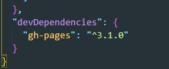
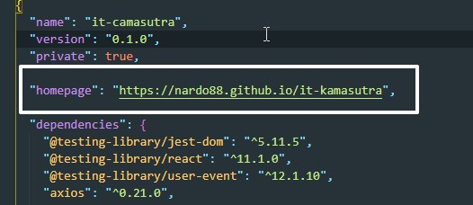
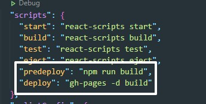
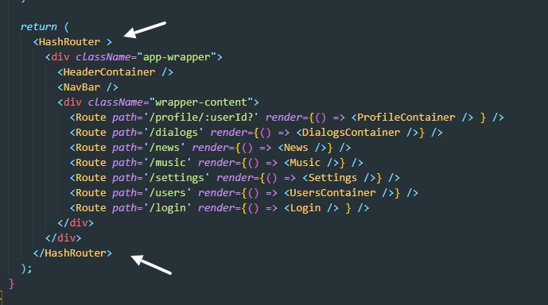
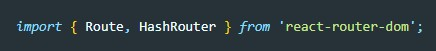

1 что нужно сделать это установить глобально gh-pages. gh-pages это пакет программ который создает в нашем проекте ветку gh-pages и ее устанавливает в качестве главной в github pages. Что бы ее установить вводим команду в терминале
npm install gh-pages --save-devОбязательно указываем ключ --save-dev. После инсталяции в файле package.json должна появиться запись Обязательно в разделе devDependencies
Далее в файл package.json добавляем вот такую запись:
т.е. указываем URL своего репозитория (этот тот репозиторий который мы использовали во время разработки туда комитили код)
Далее в раздел script файла package.json добавляем вот такой код
Теперь что бы запушить проект на GitHub Pages d терминале вводим команду
npm run deployЧто бы Router корректно работал необходимо наше приложение оборачивать не BrowserRouter, а HashRouter
Перед этим не забываем импортировать HashRouter
